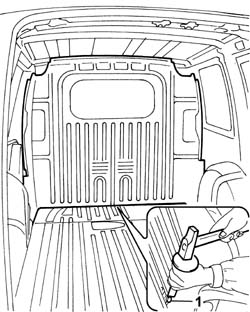
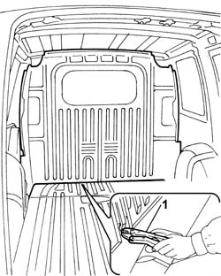

7027H08 load compartment partition
- Path
- Procedures > 70 FITTINGS > 7027 LOAD CARRYING COMPARTMENTS > 7027H load compartment partitions > 7027H08 load compartment partition
- Kind
- repair procedure (removal / refitting; the operation number is the code)
- Applies to
- all engines; all production periods
- Interactive page
- https://sloeber94.github.io/elrnDB-fDbl/en/#/2585106
Applies to: all engines; all production periods; only with equipment: Cargo trim level
 Removing
Removing
 Refitting
Refitting1. Working inside the load compartment, using a hammer and chisel, cut the shear bolts which secure the dividing wall.

Applies to: all engines; all production periods; only with equipment: Cargo trim level
1. Using self-locking grippers, undo the bolts securing the dividing wall.

Applies to: all engines; all production periods; only with equipment: Cargo trim level
Remove the dividing wall and rest it on a suitable platform.
Applies to: all engines; all production periods; only with equipment: Cargo trim level
Refitting
RemovingFit the dividing wall and tighten the bolts, using new shear bolts.